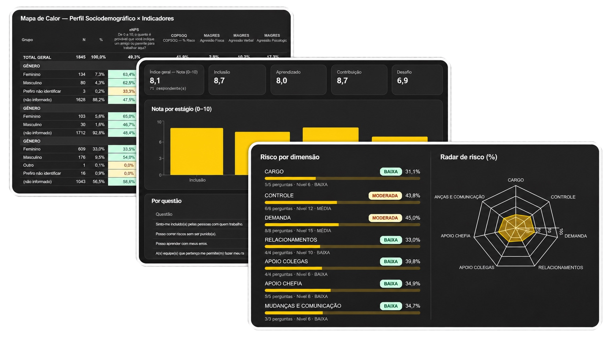

Mapa de calor para gestão Segurança psicológica para liderança COPSOQ para NR-1 Inteligência de dados de pessoas
Inteligência de dados de pessoas

Mapa de calor para gestão Segurança psicológica para liderança COPSOQ para NR-1Inteligência de dados de pessoas
Fale com a fairdata
fairdata · inteligência de dados de pessoas